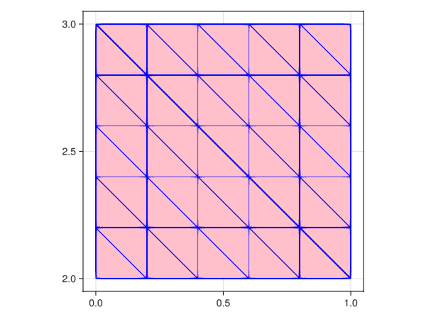
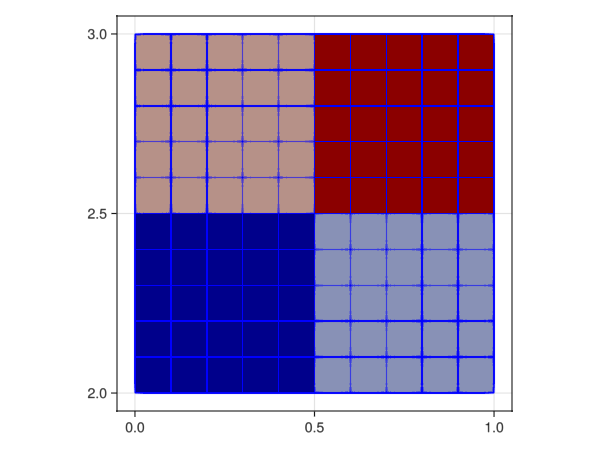
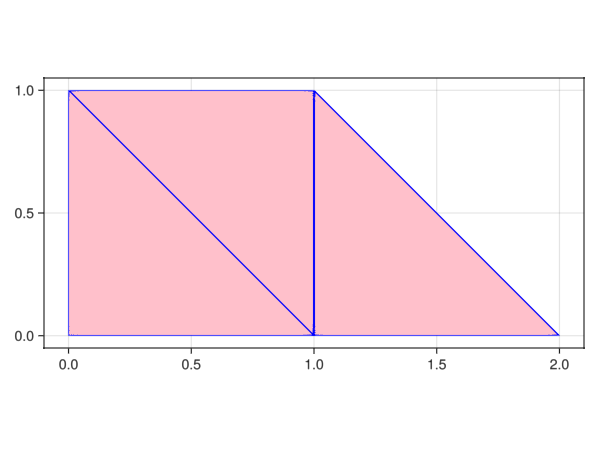
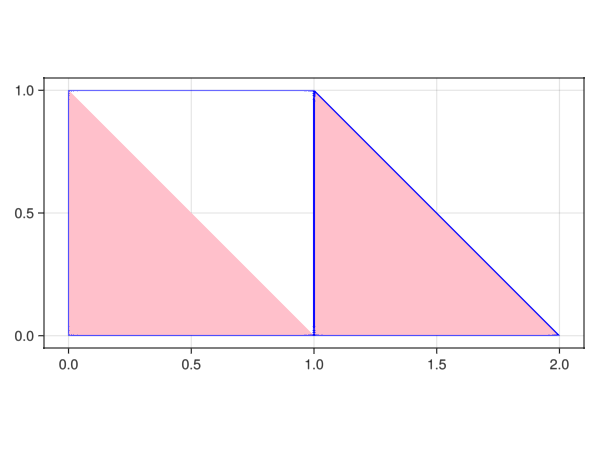
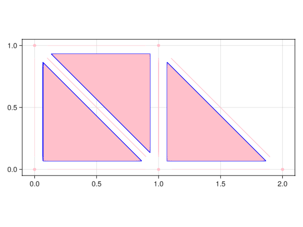

Mesh generation
import GalerkinToolkit as GT
import PartitionedArrays as PA
import GLMakie as Makie
import Gmsh
import Metis
using StaticArrays
#TODO no current way of adding this to a recipe
#https://discourse.julialang.org/t/accessing-axis-in-makie-plot-recipes/66006/1
Makie.update_theme!(Axis=(;aspect=Makie.DataAspect()))Cartesian meshes
Generate a Cartesian mesh of the 3D domain $(0,1)\times(2,3)\times(-1,1)$ using 5 cells per direction and visualize it.
domain = (0,1,1,3,-1,1)
cells = (5,5,5)
mesh = GT.cartesian_mesh(domain,cells)
Makie.plot(mesh,color=:pink,strokecolor=:blue)Generate a Cartesian mesh of the 2D domain $(0,1)\times(2,3)$ and visualize it.
domain = (0,1,2,3)
cells = (5,5)
mesh = GT.cartesian_mesh(domain,cells)
Makie.plot(mesh,color=:pink,strokecolor=:blue)Now visualize all objects (vertices, edges, faces) in the mesh.
Makie.plot(mesh,color=:pink,strokecolor=:blue,shrink=0.6,dim=(0:2))Now, do not generate low-dimensional objects on the interior of the mesh
domain = (0,1,2,3)
cells = (5,5)
mesh = GT.cartesian_mesh(domain,cells;complexify=false)
Makie.plot(mesh,color=:pink,strokecolor=:blue,shrink=0.6,dim=(0:2))Most algorithms require working with a polytopal complex (i.e., a mesh containing all low dimensional objects). Thus using the option complexify=false is not recommended, unless you know what you are doing.
Now, use triangles instead of squares.
domain = (0,1,2,3)
cells = (5,5)
mesh = GT.cartesian_mesh(domain,cells;simplexify=true)
Makie.plot(mesh,color=:pink,strokecolor=:blue)
Gmsh meshes
Read a mesh from a ".msh" file and visualize it.
repodir = joinpath(@__DIR__,"..","..","..")
fn = joinpath(repodir,"assets","mesh1.msh")
mesh = GT.mesh_from_gmsh(fn)
Makie.plot(mesh,color=:pink,strokecolor=:blue)Info : Reading '/home/runner/work/GalerkinToolkit.jl/GalerkinToolkit.jl/docs/build/examples/../../../assets/mesh1.msh'...
Info : 53 entities
Info : 1151 nodes
Info : 3937 elements
Info : Done reading '/home/runner/work/GalerkinToolkit.jl/GalerkinToolkit.jl/docs/build/examples/../../../assets/mesh1.msh'
Now, define the mesh using GMSH DSL
TODO
Now, define the mesh using GMSH julia API
TODO
Parallel meshes
Generate a Cartesian mesh of the 2D domain $(0,1)\times(2,3)$ using 10 cells in each direction. Partitioned it into 2 parts per direction and visualize with face color according to part owner.
domain = (0,1,2,3)
cells_per_dir = (10,10)
parts_per_dir = (2,2)
parts = LinearIndices((prod(parts_per_dir),))
pmesh = GT.cartesian_mesh(domain,cells_per_dir;parts_per_dir,parts)
Makie.plot(pmesh;color=GT.FaceData("__OWNER__"),strokecolor=:blue)
TODO Maybe a different API for partsperdir and parts? TODO Maybe a different API for GT.FaceData("OWNER")
Generate a mesh on a single machine (using Gmsh in this case), partition it using Metis into 4 parts, and visualize it.
np = 4
parts = LinearIndices((np,))
pmesh = PA.map_main(parts) do parts
fn = joinpath(repodir,"assets","mesh1.msh")
mesh = GT.mesh_from_gmsh(fn)
graph = GT.mesh_graph(mesh)
graph_partition = Metis.partition(graph,np)
GT.partition_mesh(mesh,np;graph,graph_partition)
end |> GT.scatter_mesh
Makie.plot(pmesh,color=GT.FaceData("__OWNER__"),strokecolor=:blue)Info : Reading '/home/runner/work/GalerkinToolkit.jl/GalerkinToolkit.jl/docs/build/examples/../../../assets/mesh1.msh'...
Info : 53 entities
Info : 1151 nodes
Info : 3937 elements
Info : Done reading '/home/runner/work/GalerkinToolkit.jl/GalerkinToolkit.jl/docs/build/examples/../../../assets/mesh1.msh'
- TODO
color=GT.FaceData("__PART__")not working - TODO better syntax for
color=GT.FaceData("__PART__")?
Meshes from arrays
Generate a mesh of three triangles from the arrays describing node coordinates and cell connectivity.
order = 1
triangle = GT.unit_simplex(Val(2))
triangle3 = GT.lagrange_mesh_face(triangle,order)
node_to_coords = SVector{2,Float64}[(0,0),(1,0),(0,1),(1,1),(2,0)]
cell_to_nodes = [[1,2,3],[2,3,4],[2,4,5]]
cell_to_type = [1,1,1]
type_to_refcell = [triangle3]
chain = GT.chain_from_arrays(
node_to_coords,
cell_to_nodes,
cell_to_type,
type_to_refcell)
mesh = GT.mesh_from_chain(chain)
Makie.plot(mesh,color=:pink,strokecolor=:blue)
Now, include also a square element
square = GT.unit_n_cube(Val(2))
square4 = GT.lagrange_mesh_face(square,order)
cell_to_nodes = [[1,2,3,4],[2,4,5]]
cell_to_type = [2,1]
type_to_refcell = (triangle3,square4)
chain = GT.chain_from_arrays(
node_to_coords,
cell_to_nodes,
cell_to_type,
type_to_refcell)
mesh = GT.mesh_from_chain(chain)
Makie.plot(mesh,color=:pink,strokecolor=:blue)
TODO visualization not working properly when more than one element type present
Generate a mesh that includes cells of different dimensions, i.e., triangles, segments, and vertices.
segment = GT.unit_simplex(Val(1))
segment2 = GT.lagrange_mesh_face(segment,order)
vertex = GT.unit_simplex(Val(0))
vertex1 = GT.lagrange_mesh_face(vertex,order)
node_to_coords = SVector{2,Float64}[(0,0),(1,0),(0,1),(1,1),(2,0)]
face2_to_nodes = [[1,2,3],[2,3,4],[2,4,5]]
face2_to_type = [1,1,1]
face1_to_nodes = [[1,2],[2,5],[5,4]]
face1_to_type = [1,1,1]
face0_to_nodes = [[1],[3]]
face0_to_type = [1,1]
face_to_nodes = [face0_to_nodes,face1_to_nodes,face2_to_nodes]
face_to_type = [face0_to_type,face1_to_type,face2_to_type]
type_to_refcell = ([vertex1],[segment2],[triangle3])
mesh = GT.mesh_from_arrays(node_to_coords,face_to_nodes,face_to_type,type_to_refcell)
Makie.plot(mesh,color=:pink,strokecolor=:blue,shrink=0.8,dim=(0:2))Now, generate all low-dimensional objects
mesh = GT.complexify(mesh)
Makie.plot(mesh,color=:pink,strokecolor=:blue,shrink=0.8,dim=(0:2))
This page was generated using Literate.jl.